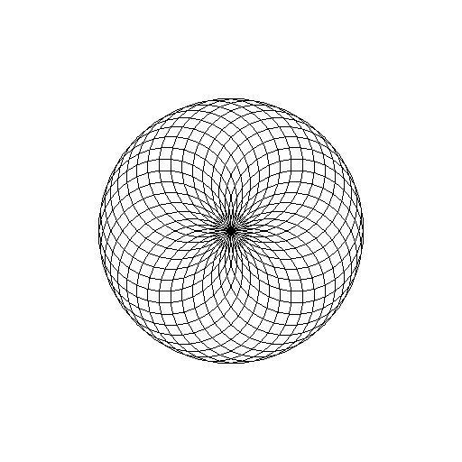

CS475
Computer Graphics
Assignment I
Developed by
Ranveer Aggarwal | 120050020
Abhinav Gupta | 120050029
Introduction
This is our submission for the first assignment of Computer Graphics. The problem statement can be found here.
Basically, the task is to implement toylogo in C++ using the openGL library.
Implementation
Given
A rudimentary parser with methods defined, but not implemented was given. The task was to implement them.
Our Solution
Using various openGL functions, we implemented the predefined methods. Maximum amount of change was made in the turtle.cpp file.
Here is how we implemented everything:
- RESET: We set the position variables and the direction variables to zero, placing the turtle right at the center of the screen.
-
CLS: For this we used
glclearto clear the color and depth buffer bits. -
F, MF, B, MB, L and R: These involved simple manipulation of the
posanddirvariables. -
COL: Again, simply setting the
colvariable did the trick. -
BGCOL: This involved passing the given arguments to
glclearcolorfunction. -
SCALE: Transformation matrices were used for this with the built-in openGL
glscalefunction. - REPEAT: For implementing this, we replicated the loop that was running all the parser commands, i.e., iteratively pushing the commands into a list of commands and then executing them.
Snapshots
Running the given examples produce the following results:
-
Example I
BEGIN CLS RESET REPEAT 4 F 0.2 R 90 ENDREP END
-
Example II
BEGIN CLS RESET REPEAT 36 REPEAT 4 F 0.4 R 90 ENDREP R 10 ENDREP END

-
Example III
BEGIN CLS RESET REPEAT 36 REPEAT 36 F 0.05 R 10 ENDREP R 10 ENDREP END

Complex Simulation
The code fo our complex simulation is:
BEGIN CLS RESET REPEAT 36 R 10 REPEAT 8 F 0.25 L 45 ENDREP ENDREP ENDand the output is:
Pause Function
Implementation
Content!
Snapshots
Content!
Recursive Drawing
Implementation
Content!